About
The idea for Toast Workshop came from the toaster sitting in my kitchen. I wanted to recreate it as a 3D interactive web app where the user can follow the same steps I take every morning: setting the timer, loading the bread, and pressing the lever, and then watch the bread come out golden brown.
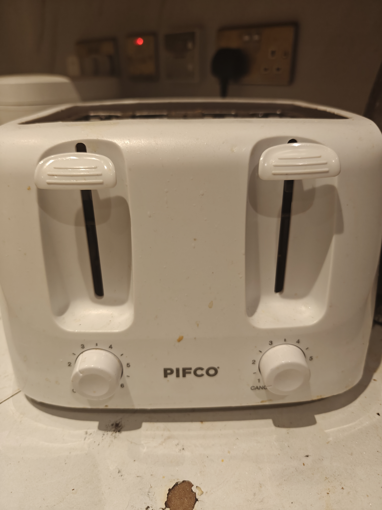
So I decided to turn it into a full interactive process: the user sets the timer, loads the bread, presses the lever and watches the toast pop up and land on a plate. Then the user can enjoy their freshly toasted bread alongside donuts dressed with icing and sprinkles.
3D Models
I created both scenes in Blender 5. The toaster scene contains the toaster body, two knobs, two levers, a raw bread slice, a toasted bread slice, and a large decorative bread loaf and donut on the side. The breakfast plate scene contains a plate, three bread slices and two donuts with sprinkles on top.
(Click on the images below to see the details)
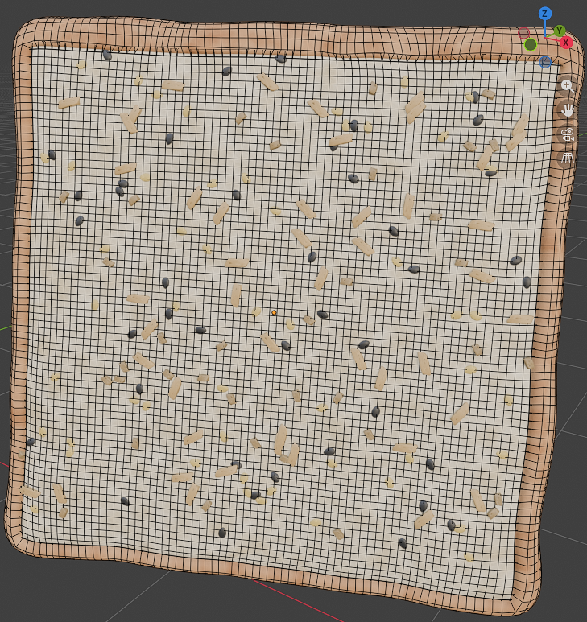
BreadI used a Subdivision Surface modifier to round the shape, then duplicated it and applied Solidify to create the crust as a separate mesh. I manually pulled vertices on the surface to add bumps and dents. I also added Noise and Bump nodes to the interior for a realistic crumb texture.
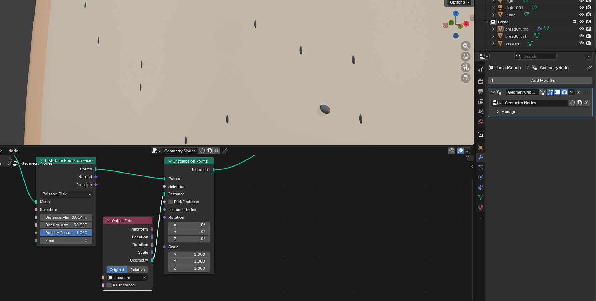
ToppingsBlack sesame and white sesame seeds were each modelled individually, along with large and small peanut pieces. They were distributed across the bread surface using Geometry Nodes. Peanut pieces were bent with Simple Deform for a more natural look. The donut sprinkles were handled the same way.
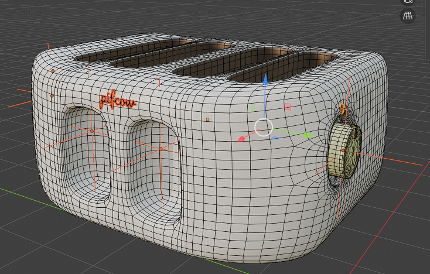
ToasterThe toaster body, two heat-setting knobs and two levers were modelled separately so each part could be animated independently.
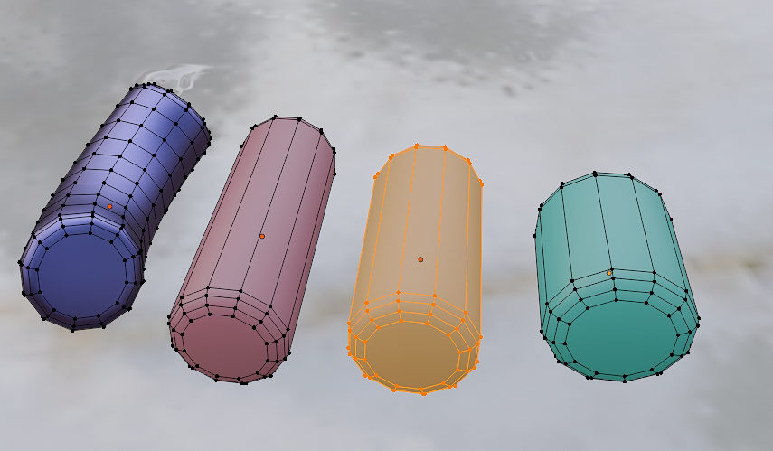
DonutTwo donuts with sprinkles were modelled for the breakfast plate scene. The sprinkles sit only on the top surface, kept in place with Weight Painting.
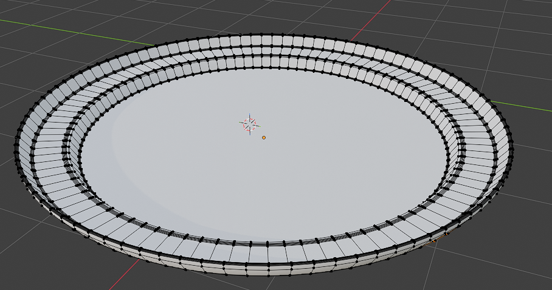
PlateA simple plate acts as the base for the breakfast scene. The bread slices and donuts all start hidden above the camera and drop into position when the Serve animation runs.
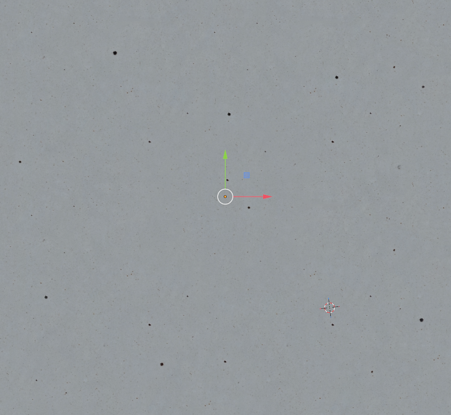
Marble floorThe floor uses a granite material from Poliigon with three texture maps: Base Color, Roughness and Normal. The Normal map adds realistic surface depth so the floor reacts correctly to the scene lighting.
Challenges
(Click on the images to see the details)
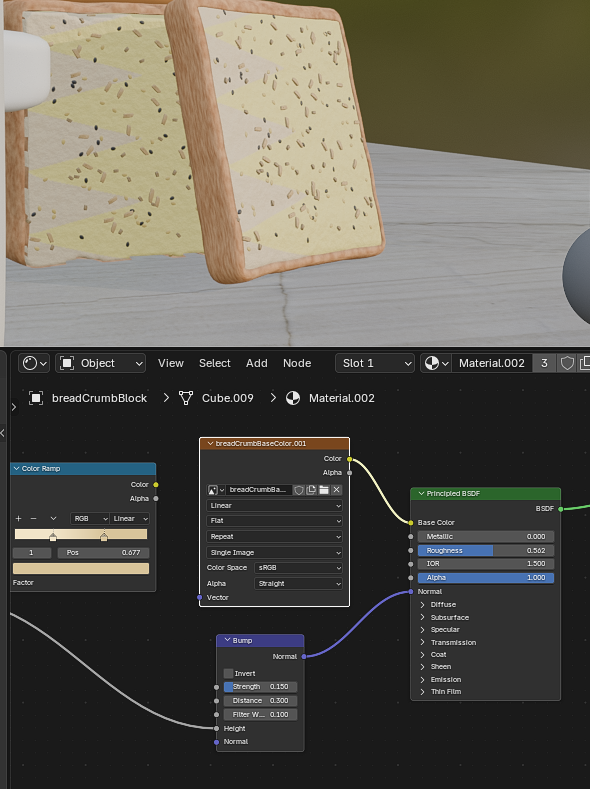
When baking the bread texture, I forgot to exclude the topping geometry from the bake. The sesame seeds and peanut pieces were projected flat onto the bread surface and became part of the texture image, so they looked like dark stains rather than 3D objects. It took a long time to identify the cause and fix the bake settings to exclude the toppings.
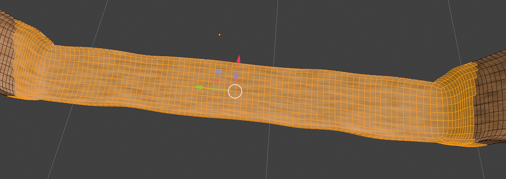
I planned to duplicate the bread and keep only the outer edge loop to create the crust. But after applying the Subdivision Surface modifier the vertices were no longer in a regular grid, so I had to manually select the crust edge points one by one, which took much longer than expected.
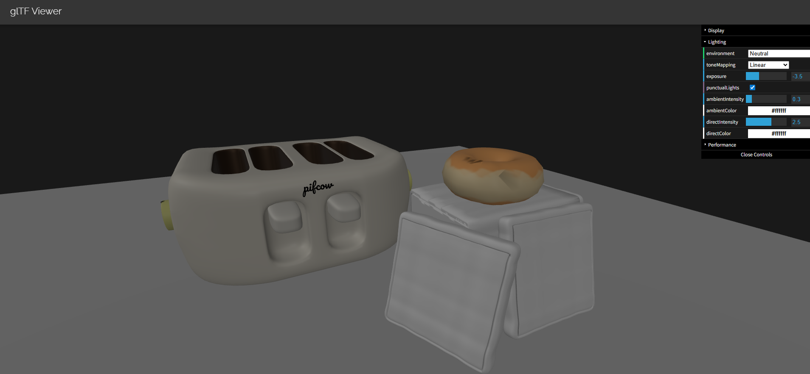
The toppings were placed using Geometry Nodes, which only generates the instances inside Blender. When exporting to GLB, those instances are not included, so the toppings were completely invisible in the browser as shown above. The fix was to bake the toppings into the bread's texture map, so they are part of the image itself rather than separate geometry.
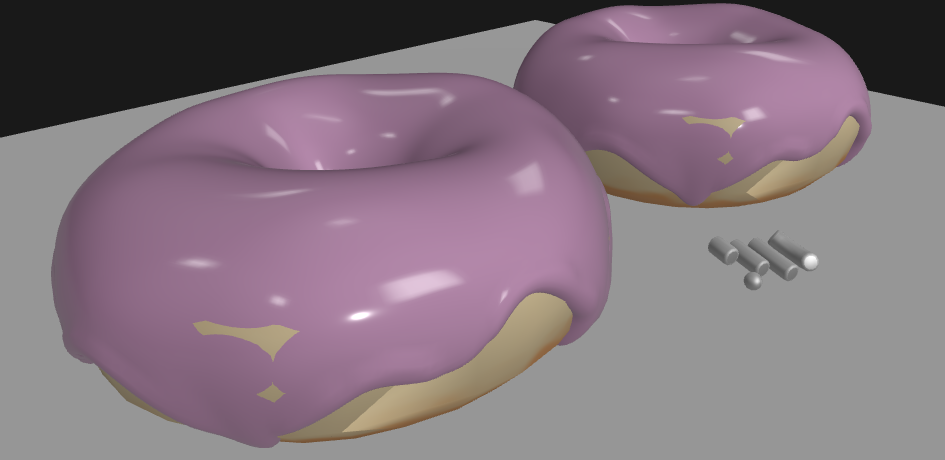
I used a Random Value node to give each topping a slightly different colour so they looked more natural. However, after using Realize Instances to convert the scattered geometry into actual mesh objects, the per-instance random values were lost and the coloring stopped working entirely. I ended up assigning fixed colours to each topping type manually.
Tools and Technologies
These are the technologies introduced in the module. I chose to use them for this project as I was already familiar with them from the lab work.
Used for modelling both scenes, applying modifiers, setting up materials, baking textures and exporting GLB files.
Used to load the GLB models, set up lights, handle camera controls, manage scene switching and drive all the animations.
Used to build the responsive two-column layout, style the warm brown colour scheme with CSS custom properties, and load custom fonts locally. JavaScript handles all the app logic including scene switching, UI controls and the animation system.
Implementation
I used Bootstrap 5 to build the responsive two-column layout and the navigation bar. I used CSS custom properties to define the colour scheme so all colours stay consistent across the page. I loaded both 3D scenes using Three.js and GLTFLoader, and used OrbitControls to let the user rotate, zoom and pan freely. I added buttons to trigger the toasting sequence, toggle wireframe mode, switch camera presets and adjust ambient light, key light and colour warmth. I also added two audio files that play at key moments during the toasting animation.
Key Design Decisions
I chose to write all animations in JavaScript rather than using Blender's keyframe system. This gave me full control over timing and sequencing so each animation could respond directly to user input. To avoid hard-coding positions, I placed named Empty objects in Blender as target markers, and the JavaScript reads their positions directly from the loaded model.
The lever button is locked until both the timer and the bread are set. I did this because pressing the lever before the bread is loaded would break the animation, and it also makes the interaction feel more like actually using a toaster.
I chose a warm toasted-brown colour scheme to match the bread and toaster theme of the app, and defined all the colours with CSS custom properties so they stay consistent across the whole page. I chose Pacifico for the logo and Oswald for navigation and headings. On smaller screens the sidebar stacks above the viewer so the layout stays usable on mobile.
The animations are triggered by button clicks and need to run in a specific order, with each step waiting for the previous one to finish. Three.js AnimationMixer plays a fixed pre-recorded timeline which is hard to control this way, so I wrote a small system that smoothly moves objects each frame from their current position to a target, with easing so the motion does not look mechanical. I also added a lock so that clicking a button mid-animation does nothing until the current one finishes.
Deeper Understanding
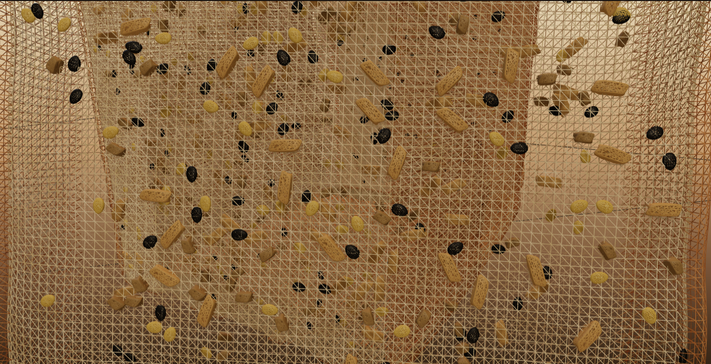
I modelled each topping individually and used Geometry Nodes to scatter them across the bread surface. I used Weight Painting to make sure nothing landed on the crust. The same approach worked for the donut sprinkles. The raw and toasted bread also use different materials: the toasted version has a darker bread colour and darker toppings to show the browning, which I handled by swapping the whole mesh when the toast is done.
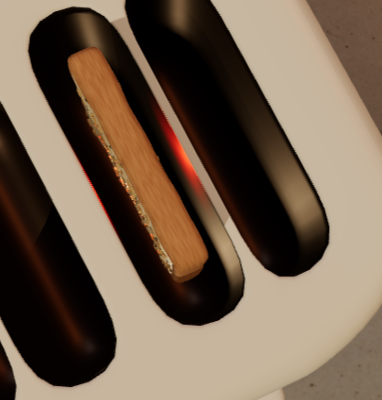
I added an orange-red point light inside the toaster bread slot. When the lever is pressed it fades in over six seconds to simulate the heating element glowing, then fades out just before the toast pops up. The intensity is controlled entirely through Three.js, which I think makes the whole toasting process feel a lot more convincing.
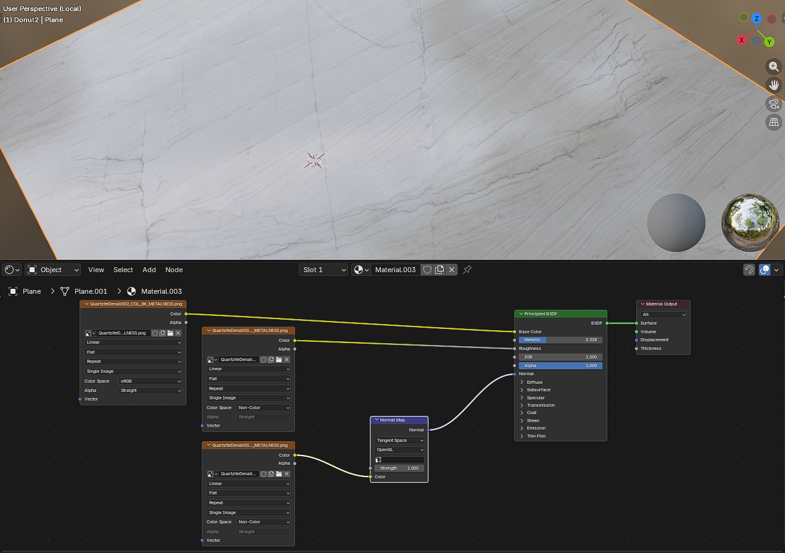
I downloaded a granite texture set from Poliigon and set up a material in Blender using three maps: Base Color, Roughness and Normal. The Normal map connects through a Normal Map node into the Principled BSDF, which gives the floor realistic surface depth that reacts properly to the scene lighting. I originally wanted to use the 8K version for more detail, but the textures alone were over 160 MB which would have made the page load very slowly, so I switched to a smaller resolution instead. The image above shows the original material I had in mind.
This was my first time applying an MVC pattern in a frontend project. The idea is that the HTML and CSS act as the View, the Three.js files handle all the scene logic and act as the Model, and UIController.js acts as the Controller, listening to button clicks and slider inputs and calling the appropriate methods on the scene without knowing anything about how Three.js works internally. Keeping them separate made it much easier to change one part without breaking the others.
Testing
I tested the app on my personal laptop and on mobile and it ran without any issues. I also had a meeting with Daniel, who tested the site on his phone and confirmed it loaded and ran correctly.
I tested the toaster animation sequence to make sure the buttons behave correctly when clicked out of order. The lever button stays disabled until both the timer and bread steps are completed.
I checked the layout at different screen widths to make sure the sidebar stacks correctly on smaller screens.
During testing I noticed the scroll wheel zoom moved too far in a single step, so I replaced the default OrbitControls zoom with a custom handler that moves a fixed amount per scroll regardless of the mouse input.
I tested both sound effects to make sure they play at the right moments in the animation. The lever sound plays just as the lever starts to move down, and the toast-done sound plays just before the bread pops up, so neither feels out of sync with what is happening on screen.
I tested switching between the toaster and breakfast plate scenes multiple times to make sure the previous scene is properly removed and the new one loads without any errors.
I tested the wireframe toggle to confirm it applies correctly to all meshes in both scenes and switches back cleanly when turned off.
I tested the front, top and default camera preset buttons in both scenes to make sure they each jump to the correct position and angle.
Implementation and Publication
The app is live on the University ITS web server and the full source code is on GitHub.
The full source code, GLB model files and Blender .blend files are all available in the repository below.
github.com/TyKyoClod/Web3D